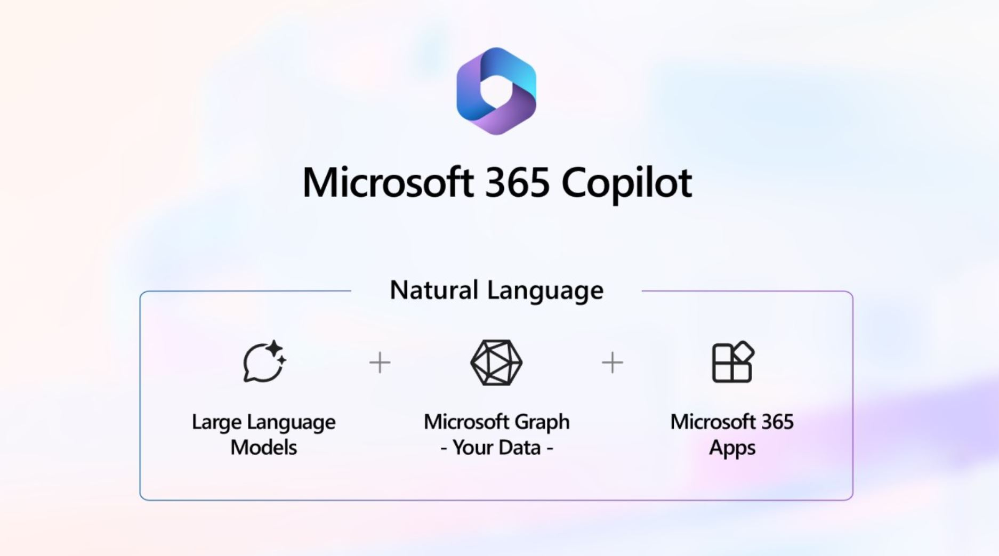
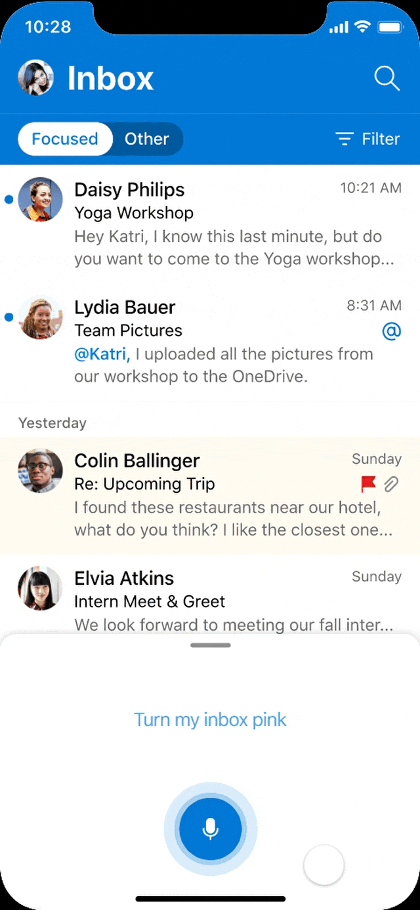
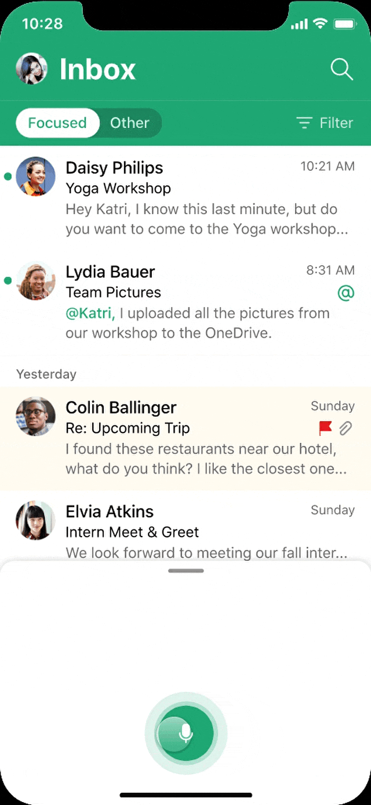
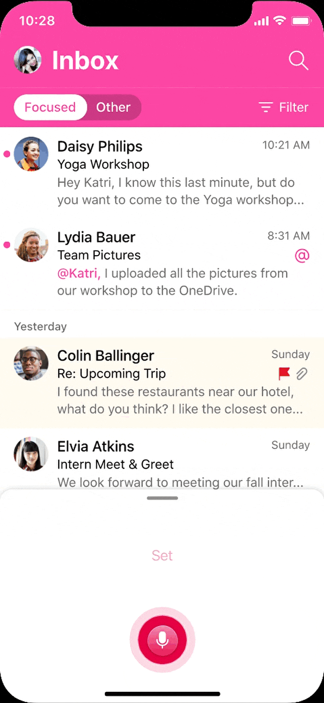
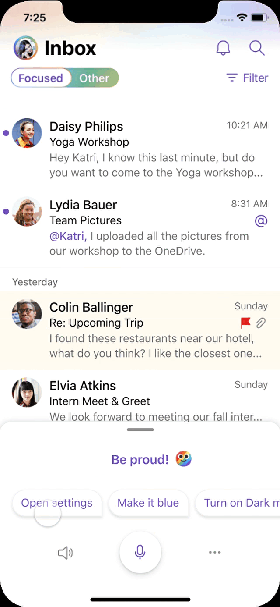
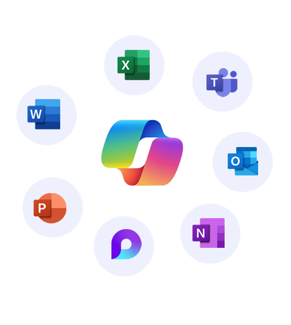

Raúl Pérez
Senior Product & Interaction Designer
🔊 Sound On! — High fidelity prototype for "Change Color Theme" VUI Interaction
👨🚀 My contribution
As a Product Designer on the Assistive Experiences team from the Microsoft 365 Studio, my main focus was to define the interaction design systems for conversational AI incubation on M365 products, which involved:
Define and articulate the scope of different features in collaboration with PMs, Design Managers and Devs.
Led internal research to learn about the hypothesis and results from other teams from the M365 Core Studio (such as Microsoft Teams, Outlook & Microsoft 365 Chat), in order to deal with the ambiguity and abstract ideas that the incubation processes required.
Facilitate the experimentation process by designing sketches, conversational interactions, user stories, user flows, mockups and rapid prototypes that aimed to make the most out of new Semantic Machines, LLMs & Generative AI technology for new interactions systems.
Propose roadmaps with scalable stages of each new feature (Crawl - Walk - Run).
✏️ Key actions — Some topics to chat about
Collaborate with the Design Research team
User's Journey Maps
Testing Semantic Machines modules
Defined Design Concepts along with PMs, Devs and Design manager
Workshops
Roadmap documentation
Sketches, Wireframes and Mockups
Graphic User Interface
Conversational User Interface
Voice User Interface
🏆 Goals
In order to “productize” this technology, the M365 Design Studio needed to consider how conversational experiences could be implemented into existing products, such as Outlook and Teams, so we developed an interaction model that augments the main UI of each feature by layering a “Cortana” module on top of them.
Why Cortana?
Cortana on M365 mobile apps
Since the acquisition of Semantic Machines Inc in 2018, Microsoft has been investing in Natural Language, LLMs and Generative AI technology to improve the productivity metrics among Microsoft 365 Users. This led to the incubation of several features that were being experimented within Cortana's integration to M365 products, such as Outlook and Teams.
Conversational AI in Outlook with Cortana
These features later became part of the construction of "Microsoft 365 Copilot" productive capabilities, which evolved into "Microsoft 365 Chat" a bit later.

Microsoft 365 Copilot
Product Designer
As a Product Designer on the M365 team, I focused on the exploration of different Conversational AI capabilities, proposing new ideas and defining frameworks for new features, such as:
Search
The tool should be able to identify user’s request and answer accordingly, acknowledging that they could be expecting an email, a file, a calendar event, or even a specific piece of information inside any of these.
Search Refinement
People should be able to correct or add variables to the search process without having to start over again.
Keyword Spotting
“Hey, Cortana!”
Semantic Machines Productivity Assistant testing
QA testing, bug reports, documentation to request metrics for our long term strategy.
Commanding
The assistant should be able to help people navigate the app and change the desired settings by asking it with natural language.
And some others, just like:
Onboarding for First Time Users
Frequently Asked Questions
AI Assistance for frontline workers
Thinking Raúl
Change Outlook's Theme
This prototype is meant to show that:
The feature can be enabled by voice
The command will show a change on the color theme from Outlook’s inbox
Cortana’s success feedback will include interesting phrases and an emoji matching the selected theme
Quick-acess touch buttons invite you to continue interacting with the feature
Cortana’s response should change even if you choose the same colors every now and then
It works with special/limited-time themes
You’re able to access the settings menu through it

"Turn my inbox pink"



Search Refinement Roadmap
This plan was based on the input data that we were able to get from people searching on their Outlook's app. One of the main focus was to make people aware how to take better advantage of the Natural Language capabilities so we could move on with more complex interactions, such as writing a whole email or edit a whole bunch of items.
A quick win: Create a "String" to start a query at the search bar, using the user's voice input.
Prototype 1
A fence that can also communicate that we can't accomplish the request - for now.
We also offer a glimpse of what the current Cortana's capabilities are.
Prototype 2
We keep the same solution, about placing the voice input on the current search bar, but we offer one more step to narrow their search.
This is also meant to tell the users that they can ask for specific results by stating this variables through natural language the next time they talk to Corana.
Prototype 3
The assistant can be present on the complete search process, by using the emerging tab, while mantaining the Natural Language interactions, to mantain consistency with the whole system.
There's also a "Direct answer" module, in which Cortana selects a single email that matches with all the variables that the users send and stating which ones are being prioritized to refine the search to that point.
After selecting the suggested email, Cortana will offer you possible next steps that you can access to with Natural Language, such as writing a Reply, Forward the email or Play it with voice.
Prototype 4
Microsoft's Copilots
Microsoft and OpenAI began their partnership in 2019, this collaboration has since grown with significant investments and joint efforts to advance AI technology. That allowed our team to articulate new capabilities into our Natural Language conversational system, such as LLMs with Generative AI, to improve the productivity metrics among Microsoft 365 users.
This led to the incubation of several features that are currently being tested & refined, to be implemented through Copilot Agents which I’m not allowed to showcase just yet. However, I'm happy to chat about every geeky topic referenced on these set of brief articles, about the future of the Generative AI being applied to productivity tools.

Role: Senior Product Designer · Core team
Role: Senior Product Designer · Core team
Role: Product Designer
Role: Product & Interaction Design Team Lead